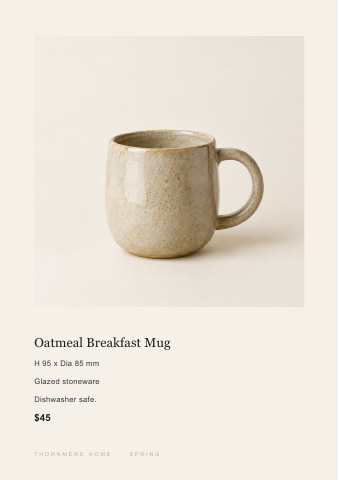

Gatsby · Pilot brief · PHOTO-26
Thornmere Home - Autumn interiors image system
SB3-026-PHO · Photo & Image
Client brief
Wholesale product images that keep indigo and reactive glaze honest
Our homeware photographs were made under two lighting rigs. Thornmere needs the twenty ceramic and textile pieces to work as a range, both in retailer tiles and on a coloured wholesale band.
The commission
Autumn interiors collection spread: 1 named export. The textiles preserve their source patterns. The styled grouping shows every piece in the twenty product photographs as one range and feels coherent.
Interiors wholesale presentation: 1 named export. Each featured object has its correct product name, with its dimensions, materials, care line and price from thornmere_autumn_skus.csv. The page sequence supports a trade buying conversation, opening on page 1 with the brand name Thornmere Home as its largest text.
Use the supplied approved copy and factual records. Permission restrictions in the owner's notes take precedence over inclusion in a source table.
Use the attached brand identity and the source files listed in the asset manifest. The output register defines exact filenames, pages, sizes and record bindings. Supporting previews are welcome but cannot replace those files.
Brand identity
Thornmere Home
Made by hand, kept for years.
- Sector
- Mid-premium homeware: glazed stoneware and woven textiles
- Origin and scale
- Founded in Providence, Rhode Island. A two-person workshop selling direct to consumer and wholesale into fourteen independent stores across the Northeast.
- About
- Thornmere Home makes glazed stoneware and woven textiles in a small Providence workshop, around thirty-two products a season priced from forty-five to a hundred and eighty dollars. The work is honest material: real glaze, real dye, thrown and woven by people who sign for it. Ceramics are shot standing, textiles draped, and the range is meant to read as one quiet, warm family rather than a catalogue of individual objects. The season turns on autumn, when the palette deepens and the catalogue goes back to the printer, one product to a page.
- Personality
- Quiet
- Warm
- Honest
- Handmade
- Unfussy
- Audience
- Buyers roughly thirty to fifty who nest and furnish slowly. Design literate, buying to keep rather than to chase a trend. Neither farmhouse cliche nor design-gallery cool, just people who want warm, made things in the house.
- Price positioning
- Mid-premium. Generous with white space, warm and truthful about material, never the austere near-black of collectible ceramics and never the crowded, saturated look of discount homeware.
- Values
- Truth to material, longevity over trend, and steady support of the independent stores that carry the range.
- Voice
- Plain and warm. Short sentences about material and making, not about lifestyle. The maker writes the care lines and they stay in the maker's own words, unreworded.
- Brand assets
- No brand guidelines were ever written down. The autumn catalogue was built by an outside studio that has since closed and kept the working layout file, so only the printer's press PDF of the spring catalogue survives. The catalogue has to be rebuilt from that press PDF and the season's spreadsheet.
Colour palette
Oatmeal Glaze
#E7DDCBoptionalA solid tile or panel ground inside a Warm Paper Ground page, carrying Stoneware Charcoal type. Never a type colour, and never the wholesale band: it sits too close to the page ground to read as a coloured band.
Indigo Dye
#33455Eone of the two band colours (the wholesale band is Soft Clay or Indigo Dye); otherwise optionalThe wholesale band or a solid tile or panel, with any type on it in Warm Paper Ground. Never a type colour.
Warm Paper Ground
#F6F1E8mandatoryThe page ground of both documents, as the full-page ground of thornmere_spring_catalog_press.pdf, including the forty millimetres of bare paper under each product name; also the colour of any type set on Indigo Dye.
Stoneware Charcoal
#3B3733mandatory for type on light groundsEvery product name, subheading, body line, price, dimension and care line set on Warm Paper Ground, Oatmeal Glaze or Soft Clay, as the dimension, material and care lines on thornmere_spring_catalog_press.pdf. Never a ground, tile, panel or band.
Soft Clay
#C9A98Eone of the two band colours (the wholesale band is Soft Clay or Indigo Dye); otherwise an optional accentThe wholesale band or a solid tile or panel, and a small running foot in tracked capitals on Warm Paper Ground, as on thornmere_spring_catalog_press.pdf. Never a product name, body line, price or care line.
Palette rules
- Distribution
- Mandatory on both documents: Warm Paper Ground as the page ground, as on thornmere_spring_catalog_press.pdf, and Stoneware Charcoal for type, as the dimension, material and care lines on thornmere_spring_catalog_press.pdf. Mandatory on the wholesale presentation: one coloured band, a solid block of Soft Clay or Indigo Dye, the same colour on every page that carries it. Grounds, tiles and panels are Warm Paper Ground, Oatmeal Glaze, Soft Clay or Indigo Dye; Stoneware Charcoal is never a ground, since the brand is never the austere near-black of collectible ceramics. On Warm Paper Ground, Oatmeal Glaze and Soft Clay, all type is Stoneware Charcoal; on Indigo Dye, all type is Warm Paper Ground. The only other type colour is Soft Clay, for a small running foot in tracked capitals on Warm Paper Ground. Photographs aside, Warm Paper Ground is the largest designed area on every page: Oatmeal Glaze, Soft Clay and Indigo Dye tiles, panels and the band together cover less of each page than Warm Paper Ground.
- Opacity
- Every palette colour is used solid, at 100% opacity. No tint, transparency, gradient, shadow or blend mode is applied to any palette colour, no drop shadow or glow is added under a cut-out piece, and no scrim, gradient or overlay of any colour, black and white included, is laid over a photograph.
- Forbidden
- No colour outside the five palette hexes for type, grounds, tiles, panels, the band, rules or icons. No pure black and no near-black outside the palette: the brand is never the austere near-black of collectible ceramics and never the crowded, saturated look of discount homeware.
- Photography
- Photographs keep the true colour of each glaze and dye and are never recoloured toward the palette: no piece is pushed to Indigo Dye, Soft Clay, Oatmeal Glaze or Stoneware Charcoal to match a hex, and no piece takes on the colour of the band, tile or ground behind it.
Typography
Thornmere Home runs four steps. Step 01, Display and H1, is Druk Medium caps at 13 pt on 15 pt leading, tracked +200 thousandths open, set alone at the head of the page above forty millimetres of bare paper; on screen it reads 17 px on 20 px. Step 02, Subheading and H2, is Druk Medium caps at 11 pt on 13 pt, tracked +160 thousandths, a size invented because the prose states none and held well under the 16 pt ceiling. Step 03, Body, is Publico Text Roman at 10 pt on 15 pt, tracking 0, measure held to a maximum of 65 characters, or 17 px on 26 px on screen. Step 04, Fine print, is Graphik Regular at 8.5 pt on 12 pt, tracked +20 thousandths, and it carries prices, dimensions and care lines. No product name is ever set above 16 pt, and care lines stay in the maker's own words.
Signature move: The product name is set in heavy condensed Druk caps at only 13 pt, tracked 200 thousandths open, alone at the head of the page above forty millimetres of bare paper, so the page reads as one small dense bar of type floating in cream.
Display face: Druk
- Brand name
- Thornmere Home
- Tagline
- Made by hand, kept for years.
- Display face
- Druk
- Text face
- Publico Text
- Scale
- Step
- 01
- Role
- Display / H1
- Family
- Druk Medium
- Size
- 13 pt
- Leading
- 15 pt
- Weight
- Medium, all caps
- Tracking
- +200 thousandths
- Sample
- THORNMERE HOME
- Note
- The product name sits alone at the head of the page above forty millimetres of bare paper, so the page reads as one small dense bar of type floating in cream. Screen equivalent 17 px on 20 px. Never above 16 pt.
- Step
- 02
- Role
- Subheading / H2
- Family
- Druk Medium
- Size
- 11 pt
- Leading
- 13 pt
- Weight
- Medium, all caps
- Tracking
- +160 thousandths
- Sample
- THROWN AND WOVEN BY HAND
- Note
- Size invented, none stated in the brand prose. Kept proportionate to step 01 and well under the 16 pt ceiling.
- Step
- 03
- Role
- Body
- Family
- Publico Text Roman
- Size
- 10 pt
- Leading
- 15 pt
- Weight
- Roman
- Tracking
- 0, max 65 characters
- Sample
- Real glaze, real dye, thrown and woven by people who sign for it.
- Note
- Screen equivalent 17 px on 26 px.
- Step
- 04
- Role
- Fine print
- Family
- Graphik Regular
- Size
- 8.5 pt
- Leading
- 12 pt
- Weight
- Regular
- Tracking
- +20 thousandths
- Sample
- Care lines, in the maker's own words.
- Note
- Carries prices, dimensions and care lines.
- Signature move
- The product name is set in heavy condensed Druk Medium caps at only 13 pt, tracked +200 thousandths open, alone at the head of the page above forty millimetres of bare paper, so the page reads as one small dense bar of type floating in cream.
- Rules
- Never set a product name above 16 pt.
- The product name always stands alone at the head of the page, above forty millimetres of bare paper.
- The product name is always Druk Medium caps tracked +200 thousandths open; the open tracking is not optional.
- Care lines stay in the maker's own words, unreworded.
- Graphik Regular, not Publico Text, carries prices, dimensions and care lines.
- Step 02 size was invented because the brand prose states none; every family in this scale is the brand's own.
Source assets (23)


sku,product_name,dimensions,materials,care_line,price,picture_filename TH-001,Oatmeal Breakfast Mug,H 95 x Dia 85 mm,Glazed stoneware,Dishwasher safe.,$45,autumn_shoot_01.jpg TH-002,Indigo Cereal Bowl,H 70 x Dia 150 mm,Glazed stoneware,Hand wash only.,$52,autumn_shoot_02.jpg TH-003,Oatmeal Pitcher,H 220 x Dia 120 mm,Glazed stoneware,"Hand wash to keep the glaze bright, and avoid sudden changes in temperature.",$96,autumn_shoot_03.jpg TH-004,Soft Clay Dinner Plate,Dia 270 mm,Glazed stoneware,Dish


Requested deliverables (2)
Autumn interiors collection spread
Autumn interiors collection spread
collection-spread.pdfFormat: pdf · Width mm: 210 · Height mm: 297 · Pages: 4- The textiles preserve their source patterns.
- The styled grouping shows every piece in the twenty product photographs as one range and feels coherent.
Interiors wholesale presentation
Interiors wholesale presentation
wholesale-presentation.pdfFormat: pdf · Width mm: 338.667 · Height mm: 190.5 · Pages: 8- Each featured object has its correct product name, with its dimensions, materials, care line and price from thornmere_autumn_skus.csv.
- The page sequence supports a trade buying conversation, opening on page 1 with the brand name Thornmere Home as its largest text.